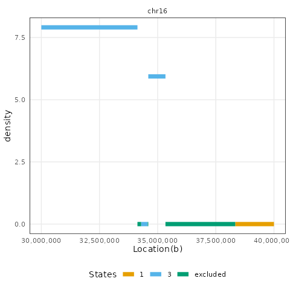
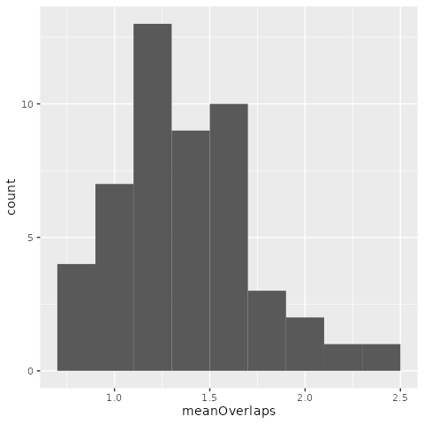

Segmented block bootstrap
Wancen Mu
08/03/2022
Source:vignettes/segmented_boot_ranges.Rmd
segmented_boot_ranges.RmdIntroduction
The following vignette describes the nullranges implementation of the block bootstrap with respect to a genomic segmentation. See the main nullranges vignette for an overview of the idea of bootstrapping, or below diagram, and there is additionally a vignette on block boostrapping without respect to segmentation-Unsegmented block bootstrap.
As proposed by Bickel et al. (2010), nullranges contains an implementation of a block bootstrap, such that features are sampled from the genome in blocks. The original block bootstrapping algorithm is implemented in a python software called Genome Structure Correlation, GSC.
In a segmented block bootstrap, the blocks are sampled and placed within regions of a genome segmentation. That is, for a genome segmented into states 1,2,…,S, blocks from state s will be used to tile the ranges of state s in each bootstrap sample. The process can be visualized in (A), a block with length \(L_b\) is randomly selected from state “red” and move to a tile block across chromosome. Additionally, the workflow of bootRanges is diagrammed in (B) and listed as:
- Overlap GRanges of feature \(x\) and GRanges of feature \(y\) to derive interested observed statistics
-
bootRanges()with optionalsegmentationandexcludecreates a bootRanges object \(y'\) - Overlap GRanges of feature \(x\) and \(y'\) to derive interested bootstrap statistics
- \(z\) test is performed for testing the null hypothesis that there is no true biological enrichment

The segmented block bootstrap has two options, either:
- Perform a de-novo segmentation of the genome using feature density, e.g. gene density
- Use exiting segmentation (e.g. ChromHMM, etc.) downloaded from AnnotationHub or external to Bioconductor (BED files imported with rtracklayer)
In this vignette, we give an example of segmenting the hg38 genome by Ensembl gene density, create bootstrapped peaks and evaluate overlaps for observed peaks and bootstrap peaks, then we profile the time to generate a single block bootstrap sample. Finally, we use a toy dataset to visualize what a segmented block bootstrap sample looks like with respect to a genome segmentation.
A finally consideration is whether the blocks should scale
proportionally to the segment state length, with the default setting of
proportionLength=TRUE. When blocks scale proportionally,
blockLength provides the maximal length of a block, while
the actual block length used for a segmentation state is proportional to
the fraction of genomic basepairs covered by that state. This option is
visualized on toy data at the end of this vignette.
Pre-built segmentations
nullranges has generated pre-built segmentations for easy use by following below section Segmentation by gene density. Either pre-built segmentations using CBS or HMM methods with \(L_s=2e6\) considering excludable regions can be selected from ExperimentHub.
suppressPackageStartupMessages(library(ExperimentHub))
eh = ExperimentHub()## snapshotDate(): 2022-07-22
# query(eh, "nullrangesdata")
seg_cbs <- eh[["EH7307"]]## snapshotDate(): 2022-07-22## see ?nullrangesData and browseVignettes('nullrangesData') for documentation## loading from cache
seg_hmm <- eh[["EH7308"]]## see ?nullrangesData and browseVignettes('nullrangesData') for documentation
## loading from cache
seg <- seg_cbsSegmentation by gene density
First we obtain the Ensembl genes (Howe et al. 2020) for segmenting by gene density. We obtain these using the ensembldb package (Rainer, Gatto, and Weichenberger 2019).
suppressPackageStartupMessages(library(ensembldb))
suppressPackageStartupMessages(library(EnsDb.Hsapiens.v86))
edb <- EnsDb.Hsapiens.v86
filt <- AnnotationFilterList(GeneIdFilter("ENSG", "startsWith"))
g <- genes(edb, filter = filt)We perform some processing to align the sequences (chromosomes) of
g with our excluded regions and our features of interest
(DNase hypersensitive sites, or DHS, defined below).
library(GenomeInfoDb)
g <- keepStandardChromosomes(g, pruning.mode = "coarse")
seqlevels(g, pruning.mode="coarse") <- setdiff(seqlevels(g), "MT")
# normally we would assign a new style, but for recent host issues
## seqlevelsStyle(g) <- "UCSC"
seqlevels(g) <- paste0("chr", seqlevels(g))
genome(g) <- "hg38"
g <- sortSeqlevels(g)
g <- sort(g)
table(seqnames(g))##
## chr1 chr2 chr3 chr4 chr5 chr6 chr7 chr8 chr9 chr10 chr11 chr12 chr13
## 5194 3971 3010 2505 2868 2863 2867 2353 2242 2204 3235 2940 1304
## chr14 chr15 chr16 chr17 chr18 chr19 chr20 chr21 chr22 chrX chrY
## 2224 2152 2511 2995 1170 2926 1386 835 1318 2359 523Import excluded regions
We next import excluded regions including ENCODE-produced excludable
regions(Amemiya, Kundaje, and Boyle 2019),
telomeres from UCSC, centromeres (Commo
2022). For easy use, pre-combined excludable regions is stored in
ExperimentHub. These steps using excluderanges package
(Dozmorov et al. 2022) are included in
nullrangesData in the
inst/scripts/make-segmentation-hg38.R script.
# suppressPackageStartupMessages(library(AnnotationHub))
exclude <- eh[["EH7306"]]## see ?nullrangesData and browseVignettes('nullrangesData') for documentation## loading from cache
all(seqlengths(g) == seqlengths(exclude))## [1] TRUECBS segmentation
We first demonstrate the use a CBS segmentation as implemented in DNAcopy (Olshen et al. 2004).
We load the nullranges and plyranges packages, and patchwork in order to produce grids of plots.
library(nullranges)
suppressPackageStartupMessages(library(plyranges))
library(patchwork)We subset the excluded ranges to those which are 500 bp or larger.
The motivation for this step is to avoid segmenting the genome into many
small pieces due to an abundance of short excluded regions. Note that we
re-save the excluded ranges to exclude.
Here, and below, we need to specify plyranges::filter as
it conflicts with filter exported by
ensembldb.
set.seed(5)
exclude <- exclude %>%
plyranges::filter(width(exclude) >= 500)
L_s <- 1e6
seg_cbs <- segmentDensity(g, n = 3, L_s = L_s,
exclude = exclude, type = "cbs")## Analyzing: Sample.1
plots <- lapply(c("ranges","barplot","boxplot"), function(t) {
plotSegment(seg_cbs, exclude, type = t)
})
plots[[1]]
plots[[2]] + plots[[3]]
Note here, the default ranges plot gives whole genome and every fractured bind regions represents state transformations happens. However, some transformations within small ranges cannot be visualized, e.g 1kb. If user want to look into specific ranges of segmentation state, the region argument is flexible to support.
region <- GRanges("chr16", IRanges(3e7,4e7))
plotSegment(seg_cbs, exclude, type="ranges", region=region)
Alternatively: HMM segmentation
Here we use an alternative segmentation implemented in the
RcppHMM CRAN package, using the initGHMM,
learnEM, and viterbi functions.
seg_hmm <- segmentDensity(g, n = 3, L_s = L_s,
exclude = exclude, type = "hmm")## Finished at Iteration: 111 with Error: 9.22278e-06
plots <- lapply(c("ranges","barplot","boxplot"), function(t) {
plotSegment(seg_hmm, exclude, type = t)
})
plots[[1]]
plots[[2]] + plots[[3]]
Segmented block bootstrap
We use a set of DNase hypersensitivity sites (DHS) from the ENCODE project (ENCODE 2012) in A549 cell line (ENCSR614GWM). Here, for speed, we work with a pre-processed data object from ExperimentHub, created using the following steps:
- Download ENCODE DNase hypersensitive peaks in A549 from AnnotationHub
- Subset to standard chromosomes and remove mitochondrial DNA
- Use a chain file from UCSC to lift ranges from hg19 to hg38
- Sort the DHS features to be bootstrapped
These steps are included in nullrangesData in the
inst/scripts/make-dhs-data.R script.
For speed of the vignette, we restrict to a smaller number of DHS, filtering by the signal value. We also remove metadata columns that we don’t need for the bootstrap analysis. Consider, when creating bootstrapped data, that you will be creating an object many times larger than your original features, so filtering and trimming extra metadata can help make the analysis more efficient.
suppressPackageStartupMessages(library(nullrangesData))
dhs <- DHSA549Hg38()## see ?nullrangesData and browseVignettes('nullrangesData') for documentation## loading from cache
dhs <- dhs %>% plyranges::filter(signalValue > 100) %>%
mutate(id = seq_along(.)) %>%
plyranges::select(id)
length(dhs)## [1] 6214##
## chr1 chr2 chr3 chr4 chr5 chr6 chr7 chr8 chr9 chr10 chr11 chr12 chr13
## 1436 252 108 30 148 51 184 146 155 443 436 526 20
## chr14 chr15 chr16 chr17 chr18 chr19 chr20 chr21 chr22 chrX chrY
## 197 265 214 715 20 649 142 31 19 17 10Now we apply a segmented block bootstrap with blocks of size 500kb, to the peaks. Here we show generation of 50 iterations of a block bootstrap followed by a typical overlap analysis using plyranges (Lee, Cook, and Lawrence 2019). (We might normally do 100 iterations or more, depending on the granularity of the bootstrap distribution that is needed.)
set.seed(5) # for reproducibility
R <- 50
blockLength <- 5e5
boots <- bootRanges(dhs, blockLength, R = R, seg = seg, exclude=exclude)
boots## bootRanges object with 310726 ranges and 4 metadata columns:
## seqnames ranges strand | id block iter
## <Rle> <IRanges> <Rle> | <integer> <integer> <Rle>
## [1] chr1 242791-242940 * | 347 5 1
## [2] chr1 256031-256180 * | 348 5 1
## [3] chr1 391535-391684 * | 5301 8 1
## [4] chr1 421046-421195 * | 5302 8 1
## [5] chr1 438186-438335 * | 5303 8 1
## ... ... ... ... . ... ... ...
## [310722] chrY 27090908-27091057 * | 2133 12441 50
## [310723] chrY 27194968-27195117 * | 2134 12441 50
## [310724] chrY 27224188-27224337 * | 2135 12441 50
## [310725] chrY 27234153-27234302 * | 2136 12441 50
## [310726] chrY 27789879-27790028 * | 2116 12442 50
## blockLength
## <Rle>
## [1] 500000
## [2] 500000
## [3] 500000
## [4] 500000
## [5] 500000
## ... ...
## [310722] 500000
## [310723] 500000
## [310724] 500000
## [310725] 500000
## [310726] 500000
## -------
## seqinfo: 24 sequences from hg38 genomeWhat is returned here? The bootRanges function returns a
bootRanges object, which is a simple sub-class of
GRanges. The iteration (iter) and the block length
(blockLength) are recorded as metadata columns, accessible
via mcols. We return the bootstrapped ranges as
GRanges rather than GRangesList, as the former is more
compatible with downstream overlap joins with plyranges, where
the iteration column can be used with group_by to provide
per bootstrap summary statistics, as shown below.
Note that we use the exclude object from the previous
step, which does not contain small ranges. If one wanted to also avoid
generation of bootstrapped features that overlap small excluded ranges,
then omit this filtering step (use the original, complete
exclude feature set).
We can examine the number and extent of the bootstrapped data:
## DataFrame with 50 rows and 3 columns
## iter n total_width
## <Rle> <integer> <integer>
## 1 1 6150 923802
## 2 2 6276 945143
## 3 3 6249 939485
## 4 4 6293 946714
## 5 5 6365 957108
## ... ... ... ...
## 46 46 6214 936107
## 47 47 6177 930282
## 48 48 6225 936523
## 49 49 6185 931428
## 50 50 6250 937598which is similar to the orig inal set, after filtering out those overlapping the excluded region:
dhs_filt <- dhs %>% filter_by_non_overlaps(exclude)
dhs_filt %>% summarize(n = n(), total_width=sum(width))## DataFrame with 1 row and 2 columns
## n total_width
## <integer> <integer>
## 1 6166 927017Use with plyranges
Suppose we have a set of features x and we are
interested in evaluating the overlap of this set with the DHS. We can
calculate for example the mean observed number of overlaps for features
in x (or something more complicated, e.g. the maximum log
fold change or signal value for DHS peaks within a maxgap
window of x).
x <- GRanges("chr2", IRanges(1 + 50:99 * 1e6, width=1e6), x_id=1:50)
x <- x %>% mutate(n_overlaps = count_overlaps(., dhs_filt))
mean( x$n_overlaps )## [1] 1.26We can repeat this with the bootstrapped features using a
group_by command, a summarize, followed by a
second group_by and summarize. It may help to
step through these commands one by one to understand what the
intermediate output is.
Note that we need to use tidyr::complete in order to
fill in combinations of x and iter where the
overlap was 0.
boot_stats <- x %>% join_overlap_inner(boots) %>%
group_by(x_id, iter) %>%
summarize(n_overlaps = n()) %>%
as.data.frame() %>%
complete(x_id, iter, fill=list(n_overlaps = 0)) %>%
group_by(iter) %>%
summarize(meanOverlaps = mean(n_overlaps))The above code, first grouping by x_id and
iter, then subsequently by iter is general and
allows for more complex analysis than just mean overlap (e.g. how many
times an x range has 1 or more overlap, what is the mean or
max signal value for peaks overlapping ranges in x,
etc.).
Finally we can plot a histogram. In this case, as the x
features were arbitrary, our observed value falls within the
distribution of mean overlap with bootstrapped data.
suppressPackageStartupMessages(library(ggplot2))
ggplot(boot_stats, aes(meanOverlaps)) +
geom_histogram(binwidth=.2)
For more examples of combining bootRanges from
nullranges with plyranges piped operations, see the
relevant chapter in the tidy-ranges-tutorial
book.
Timing on DHS peaks
Here, we test the speed of the various options for bootstrapping (see below for visualization of the difference).
library(microbenchmark)
microbenchmark(
list=alist(
prop = bootRanges(dhs, blockLength, seg = seg, proportionLength = TRUE),
no_prop = bootRanges(dhs, blockLength, seg = seg, proportionLength = FALSE)
), times=10)## Unit: milliseconds
## expr min lq mean median uq max neval
## prop 87.5933 90.7356 94.24532 91.87500 92.3701 119.8743 10
## no_prop 80.9131 81.2898 82.67386 82.05245 83.8276 85.6265 10Visualizing toy bootstrap samples
Below we present a toy example for visualizing the segmented block bootstrap. First, we define a helper function for plotting GRanges using plotgardener (Kramer et al. 2021). A key aspect here is that we color the original and bootstrapped ranges by the genomic state (the state of the segmentation that the original ranges fall in).
suppressPackageStartupMessages(library(plotgardener))
my_palette <- function(n) {
head(c("red","green3","red3","dodgerblue",
"blue2","green4","darkred"), n)
}
plotGRanges <- function(gr) {
pageCreate(width = 5, height = 5, xgrid = 0,
ygrid = 0, showGuides = TRUE)
for (i in seq_along(seqlevels(gr))) {
chrom <- seqlevels(gr)[i]
chromend <- seqlengths(gr)[[chrom]]
suppressMessages({
p <- pgParams(chromstart = 0, chromend = chromend,
x = 0.5, width = 4*chromend/500, height = 2,
at = seq(0, chromend, 50),
fill = colorby("state_col", palette=my_palette))
prngs <- plotRanges(data = gr, params = p,
chrom = chrom,
y = 2 * i,
just = c("left", "bottom"))
annoGenomeLabel(plot = prngs, params = p, y = 0.1 + 2 * i)
})
}
}Create a toy genome segmentation:
library(GenomicRanges)
seq_nms <- rep(c("chr1","chr2"), c(4,3))
seg <- GRanges(
seqnames = seq_nms,
IRanges(start = c(1, 101, 201, 401, 1, 201, 301),
width = c(100, 100, 200, 100, 200, 100, 100)),
seqlengths=c(chr1=500,chr2=400),
state = c(1,2,1,3,3,2,1),
state_col = factor(1:7)
)We can visualize with our helper function:
plotGRanges(seg)
Now create small ranges distributed uniformly across the toy genome:
set.seed(1)
n <- 200
gr <- GRanges(
seqnames=sort(sample(c("chr1","chr2"), n, TRUE)),
IRanges(start=round(runif(n, 1, 500-10+1)), width=10)
)
suppressWarnings({
seqlengths(gr) <- seqlengths(seg)
})
gr <- gr[!(seqnames(gr) == "chr2" & end(gr) > 400)]
gr <- sort(gr)
idx <- findOverlaps(gr, seg, type="within", select="first")
gr <- gr[!is.na(idx)]
idx <- idx[!is.na(idx)]
gr$state <- seg$state[idx]
gr$state_col <- factor(seg$state_col[idx])
plotGRanges(gr)
Not scaling by segmentation
We can visualize block bootstrapped ranges when the blocks do not scale to segment state length:
set.seed(1)
gr_prime <- bootRanges(gr, blockLength = 25, seg = seg,
proportionLength = FALSE)
plotGRanges(gr_prime)
Scaling by segmentation
This time the blocks scale to the segment state length. Note that in
this case blockLength is the maximal block length
possible, but the actual block lengths per segment will be smaller
(proportional to the fraction of basepairs covered by that state in the
genome segmentation).
set.seed(1)
gr_prime <- bootRanges(gr, blockLength = 50, seg = seg,
proportionLength = TRUE)
plotGRanges(gr_prime)
Note that some ranges from adjacent states are allowed to be placed within different states in the bootstrap sample. This is because, during the random sampling of blocks of original data, a block is allowed to extend beyond the segmentation region of the state being sampled, and features from adjacent states are not excluded from the sampled block.
Session information
## R version 4.2.0 (2022-04-22)
## Platform: x86_64-pc-linux-gnu (64-bit)
## Running under: Ubuntu 20.04.4 LTS
##
## Matrix products: default
## BLAS: /usr/lib/x86_64-linux-gnu/openblas-pthread/libblas.so.3
## LAPACK: /usr/lib/x86_64-linux-gnu/openblas-pthread/liblapack.so.3
##
## locale:
## [1] LC_CTYPE=en_US.UTF-8 LC_NUMERIC=C
## [3] LC_TIME=en_US.UTF-8 LC_COLLATE=en_US.UTF-8
## [5] LC_MONETARY=en_US.UTF-8 LC_MESSAGES=en_US.UTF-8
## [7] LC_PAPER=en_US.UTF-8 LC_NAME=C
## [9] LC_ADDRESS=C LC_TELEPHONE=C
## [11] LC_MEASUREMENT=en_US.UTF-8 LC_IDENTIFICATION=C
##
## attached base packages:
## [1] stats4 stats graphics grDevices utils datasets methods
## [8] base
##
## other attached packages:
## [1] plotgardener_1.3.8 microbenchmark_1.4.9
## [3] ggplot2_3.3.6 tidyr_1.2.0
## [5] patchwork_1.1.1 plyranges_1.17.0
## [7] nullranges_1.3.4 EnsDb.Hsapiens.v86_2.99.0
## [9] ensembldb_2.21.3 AnnotationFilter_1.21.0
## [11] GenomicFeatures_1.49.5 AnnotationDbi_1.59.1
## [13] nullrangesData_1.3.0 InteractionSet_1.25.0
## [15] SummarizedExperiment_1.27.1 Biobase_2.57.1
## [17] MatrixGenerics_1.9.1 matrixStats_0.62.0
## [19] GenomicRanges_1.49.0 GenomeInfoDb_1.33.3
## [21] IRanges_2.31.0 S4Vectors_0.35.1
## [23] ExperimentHub_2.5.0 AnnotationHub_3.5.0
## [25] BiocFileCache_2.5.0 dbplyr_2.2.1
## [27] BiocGenerics_0.43.1
##
## loaded via a namespace (and not attached):
## [1] systemfonts_1.0.4 plyr_1.8.7
## [3] RcppHMM_1.2.2 lazyeval_0.2.2
## [5] BiocParallel_1.31.12 digest_0.6.29
## [7] yulab.utils_0.0.5 htmltools_0.5.2
## [9] fansi_1.0.3 magrittr_2.0.3
## [11] memoise_2.0.1 ks_1.13.5
## [13] Biostrings_2.65.1 pkgdown_2.0.4
## [15] prettyunits_1.1.1 colorspace_2.0-3
## [17] blob_1.2.3 rappdirs_0.3.3
## [19] textshaping_0.3.6 xfun_0.31
## [21] dplyr_1.0.9 crayon_1.5.1
## [23] RCurl_1.98-1.7 jsonlite_1.8.0
## [25] glue_1.6.2 gtable_0.3.0
## [27] zlibbioc_1.43.0 XVector_0.37.0
## [29] strawr_0.0.9 DelayedArray_0.23.1
## [31] scales_1.2.0 mvtnorm_1.1-3
## [33] DBI_1.1.3 Rcpp_1.0.8.3
## [35] xtable_1.8-4 progress_1.2.2
## [37] gridGraphics_0.5-1 bit_4.0.4
## [39] mclust_5.4.10 httr_1.4.3
## [41] RColorBrewer_1.1-3 speedglm_0.3-4
## [43] ellipsis_0.3.2 pkgconfig_2.0.3
## [45] XML_3.99-0.10 farver_2.1.0
## [47] sass_0.4.1 utf8_1.2.2
## [49] DNAcopy_1.71.0 ggplotify_0.1.0
## [51] tidyselect_1.1.2 labeling_0.4.2
## [53] rlang_1.0.3 later_1.3.0
## [55] munsell_0.5.0 BiocVersion_3.16.0
## [57] tools_4.2.0 cachem_1.0.6
## [59] cli_3.3.0 generics_0.1.2
## [61] RSQLite_2.2.14 ggridges_0.5.3
## [63] evaluate_0.15 stringr_1.4.0
## [65] fastmap_1.1.0 yaml_2.3.5
## [67] ragg_1.2.2 knitr_1.39
## [69] bit64_4.0.5 fs_1.5.2
## [71] purrr_0.3.4 KEGGREST_1.37.3
## [73] mime_0.12 pracma_2.3.8
## [75] xml2_1.3.3 biomaRt_2.53.2
## [77] compiler_4.2.0 filelock_1.0.2
## [79] curl_4.3.2 png_0.1-7
## [81] interactiveDisplayBase_1.35.0 tibble_3.1.7
## [83] bslib_0.3.1 stringi_1.7.6
## [85] highr_0.9 desc_1.4.1
## [87] lattice_0.20-45 ProtGenerics_1.29.0
## [89] Matrix_1.4-1 vctrs_0.4.1
## [91] pillar_1.7.0 lifecycle_1.0.1
## [93] BiocManager_1.30.18 jquerylib_0.1.4
## [95] data.table_1.14.2 bitops_1.0-7
## [97] httpuv_1.6.5 rtracklayer_1.57.0
## [99] R6_2.5.1 BiocIO_1.7.1
## [101] promises_1.2.0.1 KernSmooth_2.23-20
## [103] codetools_0.2-18 MASS_7.3-57
## [105] assertthat_0.2.1 rprojroot_2.0.3
## [107] rjson_0.2.21 withr_2.5.0
## [109] GenomicAlignments_1.33.1 Rsamtools_2.13.3
## [111] GenomeInfoDbData_1.2.8 parallel_4.2.0
## [113] hms_1.1.1 grid_4.2.0
## [115] rmarkdown_2.14 shiny_1.7.1
## [117] restfulr_0.0.15